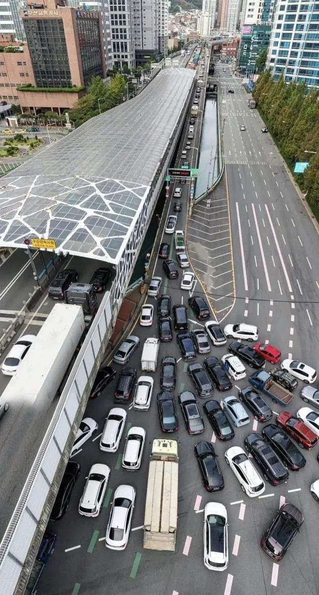

도로 설계가 처음부터 잘못되어서, 구간별 빠지는 차량 없이 거의 범내골 to 서부산 까지 합류,합류,합류 만 하게 되어있음
고가도로폭에 맞춰 주거지나 대형 건물들이 들어서서 확장도 불가능, 하천이나 교차로를 지나는 구간도 많아서 램프 위치 이동도 불가
대부분 합류 램프가 사거리~육거리에 있어서 가뜩이나 고가도로도 정체인데 모든 방향 교차로에서 오는 차량들이 램프 올리려고 신호마다 우르르 몰려오니 저지랄이 남
우회 터널이나 도로가 있는데, 창원,신항,녹산 으로 출근하는 수영구/해운대구 출퇴근길 해소는 불가
+ 그리고 외곽으로 한참 돌아가야함
안막히고 45km 2시간 걸릴것이냐, 막히고 10km 가는데 1시간 걸릴것이냐
그야말로 진퇴양난
도로만들기 게임만 스팀에서 20개 정도 구매한 사람인데 볼 때마다 어지럽네 이 도로는.
이게 뭐여 시벌 ㅋㅋㅋㅋㅋ
주말 낚시갈때 새벽에타면 존나 쾌적함 출퇴근 시간엔 안타봐서 모르겟네
언제적 시장을?